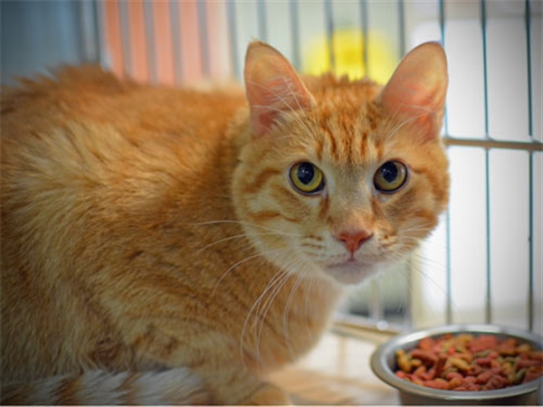
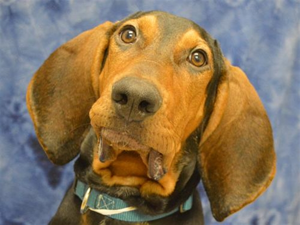
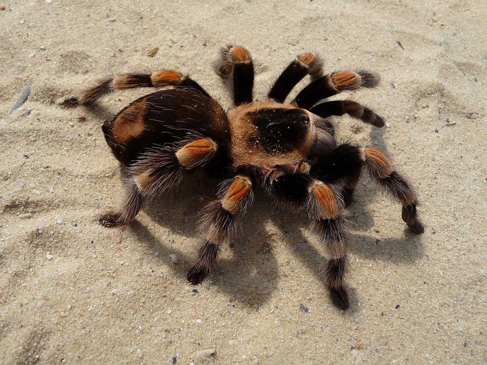
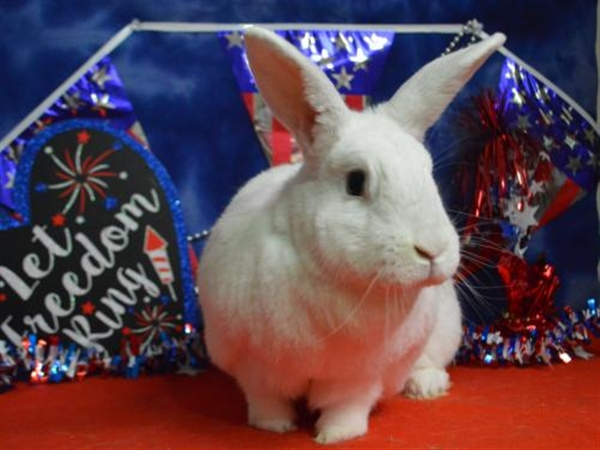

Ginger
Cat
I am a sweet, handsome, loving girl, looking for a family to call my own. I LOVE pets, but am worried about the big world around me. Limiting me to one room of your home (at first) will help me feel safe. I will need daily interaction with you as I get used to my new life. Need some biscuits with your breakfast? I’m an expert kneader! Cheek and chin scratches make me so happy! I have an excellent purr!
Cornelius
Dog
I came all the way to OHS through the Second Chance Program. My history is a mystery and my friends here do not know much about me yet! It is unknown if I have ever lived with other animals or children. I am eager to learn and a Basic Manners class may be just the right thing for us! I really enjoy playing with toys! I’ll let you know my favorite one when we meet! I am not one to sit still! I will flourish in a home with someone that will keep me mentally and physically active! Not only do I pull on heart strings, but I also pull on leashes! I will need someone to help me with my leash manners. My rough and tumble play style may not be the right match for all dogs.
Baxter
Tarantula
I'm baxter, and I'm the furriest spider in town! Don't let my little beady eyes fool you; I'll be your best friend! Take me into your home immediately.
Martha Stewart
Rabbit
Hay, fresh greens, fiber-rich pellets and fresh water are the key things to keep my healthy! I will enjoy daily enrichment through regular play time, exercise and bunny-friendly toys! Along with routine vet checks, I will also need regular grooming and nail trims. I am bonded to Ginger. We must go home together and our adoption fee includes both of us.